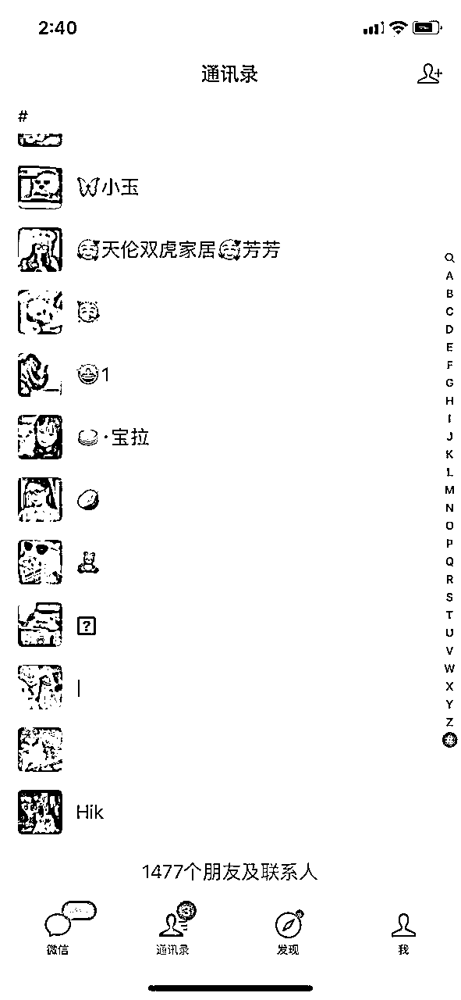

来源：https://o16m4rgdmt3.feishu.cn/docx/R2U7d6Kj1oZ0SyxE4K3c9UtNnYe
答案就是去抄袭。抄袭是最快的！
就是赚钱的机会在你眼睛面前，然后你你总觉得说的这话肯定是跟你在扯淡，我上个文章里面就说了，真心建议大家看一下，其实你赚不到钱的主要原因就是一直在理论知识层面，要么就是一直停留在执行力层面。
今天再给大家分享一个带领大一表妹赚钱的复盘，这个帖子对于没有在互联网上面赚到过钱的人，一定是有启发的，看完直接上手就行了，趁着现在有流量！
为什么那么多项目我不去分享，单单拿出来这个作为分享呢，还是上面两个点的逻辑，大部分人是因为没有执行力，即便我告诉你完整的玩法你也坚持不下去，如果三天都坚持不下去，你就想赚钱未免有点太不尊重钱了，那么今天给大家分享的是只要是你能有三天的耐心，就能那种对应的正反馈！
那么今天的内容我会从一个完全不懂互联网的小白，从互联网上赚到的第一个 5000 块钱，一套完整的运营流程，全部呈现给大家，这个项目目前依旧可以去玩，
市面上一定是有人在做培训，这个大家擦亮眼睛就行了，即便是一个搞培训的我相信很多人都说不出来个所以然，那么我会从我为什么选择这个项目，并且从零到一我到底在做什么，凭什么能够让一个从来没有涉足过互联网的小白赚到第一个 5000 块钱！
干货多多，全部都是本人的实操经验分享！
为了更好的阅读体验，请圈友移步到飞书阅读：
突然收到的一个消息，我表妹说要做个副业，当然之前我已经给她说过让她更新小红书，因为小红书我们起号还是比较专业的，经过我手里面的账号最少也有百万粉丝了，但是事实就是大部分人的状况，三分钟热度而已，确实很难成事，
所以这这次索性直接给她说个简单的，以最快的速度拿到正反馈，如果这样还是坚持不下去，那我也无能为力了！当然她可能不清楚为什么一个账号为什么选择这样的一个领域，我会尽量在这个文章里面给大家讲解清楚，以便于大家以后找项目知道怎么入手！
基本上和大家状态一样，非要认为自己是天选之子，但是往往事与愿违，所以如果你没有天赋，尽量是用数量去对抗质量，不要总想着去走捷径！
从这里就可以分析出来了，如果再给她那种周期比较长的项目，拿不到正反馈的项目，基本上还是很难实现，即便是一个月 1000 的收益！
所以这次的定位：
短期价值，正反馈，即便是流量反馈！
这里给大家分享一个工具，这个大家看自己意愿就可以了，
新人的话可以领 3 天 vip 可以登录一下看看，购买的话不做任何推荐！
https://xh.newrank.cn/
这里的话直接选择低粉爆款排行就行了，
这里的核心就是想要短期拿到正反馈，
你必须能够看到别人能够短时间做到的事情，尽量选择 24 小时，
按互动进行排序，在我的理念里面，
如果一个帖子很少有互动即便你去抄，也非常难出爆款，
这个在做小红书的人应该都出现过这种情况！
因为现在我没有办法找到十月份的那个排行，
就直接用今天的最新排行给大家做演示，
其实核心逻辑都是一样的！
这里方便大家能够更加直观的观看，我把图片放小，
主要是让大家明白什么样子的低粉爆款才是符合当下我们去做的，
并不是随便找一个就去抄，那样是非常难拿到爆款内容的
这里如果你是在做小红书的，这个思路对大家应该是有帮助的，
任何赛道领域都是可以这样做！
从这里不难发现，十条热爆上面有五条都是同样的内容，这里我给大家下载两个方便观看！
为什么我说都是同样的内容，来，往下看！
这里只选择两天视频内容给大家看一下就知道了，
这就是直接搬运+评论区截图从而生成的内容，
看到这里就非常符合刚才的
定位：
短期价值，正反馈，即便是流量反馈！
当然从视频端口去看流量肯定是没有任何问题，
那么收益呢，我们应该怎么去看，好我们后台看一下！
上面可以看出来，这个账号一共更新 49 就作品，单单接广告数量就有十条，这个大家自行去看就行了，其他账号都是同理，这里就不给大家一一做演示了，上图的五个账号，每个账号都有广告推广，说明这种账号就是靠播放量去开通蒲公英去赚收益，即便按照一条一百的单价，这个账号也有 1000 元收益到账，这个是如何根据你的定位去找自己要做的内容的一个完整的流程！
如果事情到这里就截至的话，
就不会出现这个文章了，
因为这里距离 5000 收益仿佛还是有点距离，
那么我先跟大家说一下这种视频怎么制作，
并且解决一下大家的问题！
大家也无数次听说过变现就是
产品-流量-转化
那么后面我围绕这三点好好跟大家说一下，为什么同样一个人做项目，赚钱的收益是不一样的，到底核心在哪里，通过上面内容可以看出来，产品就是围绕流量去展开，就是蒲公英去接广告，就是我有流量我就可以接广告，转化的话是随机的，也就是说有人找我打广告我就可以赚钱，没有找我就没有钱的这样一个阶段！
这里给大家提醒一下，一定要清楚自己赚钱的目的是什么，不要盯着所谓的播放量，比如我有一个账号目的就是为了引流，那么我丝毫不会在意一个作品的播放，即便上一个内容可能是十万+，后一个可能就是几百个，因为能够给我带来引流价值就可以了！
那么接下来就是这种账号到底是如何制作的，
后面将从起号-内容制作-发布内容-如何接蒲公英这几个方面去展开！
我一直都在说，凡是告诉你起号逻辑的都可以一律拉黑了，
但是可能每个人所接触的不一样，如果你的账号不是零播放，
就没有任何问题，如果是直接注销就行，如果这个也算是养号的话当我没说！
这里有人会说之前个位数的播放账号可以用么，可以的，而且没有任何问题，因为今天案例就是用的就这种账号，
还有人说之前违规过的账号还能拿来用么，当然也没有任何问题，
下面这个账号就是违规过的账号，而且不只一次，看流量的话就是即便有爆款可能不是也不是很稳定，但是如果出现爆款之后，垂直更新出爆款的几率肯定是比较高的！
对于起号我认为只要是你能为平台提供价值，平台没有理由去限制一个你的账号！
这里如果要是分享起号的话我感觉我还能写一个 5000 字，先让你拿着设备跑步开始说就行！
账号搭建的话直接抄对标账号就行了，看看别人头像，简介，背景，名称，
无非就是这样四件套，建议改成女生头像，还有女生常用名称即可，因为我看别人也是这样做的！
说白了就是抄你找到对标账号的就行了，视频都抄了，四件套不是随便借鉴嘛！
这里的话还是比较简单的，所需要的内容也不是很多，那么如何去找相对应的爆款内容，这里的话以下面这个账号作为对标吧，毕竟是我见证过这个账号的起号流程，这里如果你们做的话直接去对标上面的账号就行，相信上个月大家应该知道为什么发红楼梦还有哈利波特，因为一直在热搜上面滚动，你只要发就有流量，而且是十分钟就能跑几千的那种，这里参考上面五个账号也是一样的，别人剪什么片段，你就剪什么片段就行，非常容易出爆款！
这里就以红楼梦作为主题，去抖音搜索就可以了，上个月恐怖到所有的下拉词都是热搜，
然后选择一条播放量比较多的视频，因为是搬运这个就直接选择播放量多的就行了，
然后就是直接复制链接，打开小程序去水印，可以直接扫码，也可以直接去微信搜索就行了，这个我感觉还是不错的，你有更好的话这里不做任何推荐，直接选择去水印就可以下载原视频了，然后打开评论区随便截个图就可以，大家也可以看到，每个评论区都是十万点赞，这种的直接截图备用即可！
再往下就是剪辑层面了，这里我使用的是剪映，因为比较习惯了，现在识别字幕都开始收费了，这里给大家分享一个破解版的按转包，感兴趣的直接去下载就行！手机端电脑端都有！注意别随便更新就行了！
链接：https://pan.baidu.com/s/1YfLRSL39ES21Pxv00a2BEg?pwd=WsCL
提取码：WsCL
其实剪辑就非常简单，都不需要你去搞去重，即便是 AI 回答去重都这么专业了，所以这里没有必要的事情就不做叙述了，主要是真没有用过去重，还有很多人到处去找学习教程，购买课程，依旧不会的原因其实是学习方法的问题，一定要为了学习而学习，
如果我想要学习添加字幕，那你就直接去平台搜索如何识别字幕就可以解决的，但是很多人直接去买剪映可能，这个我是不太能理解的，一定要为了学习而学习，而不是为了感动自己而学习，现在信息都这么开放，学什么直接搜就行了，尽量别直接搜合集，十分钟的视频都看不完，直接买课，不放着生灰还能干嘛！
第一步就是选择视频，调整比例成为 3：4，毕竟这个是小红书的常用比例，然后拖到最上方，给添加画中画做准备，将画中画和视频内容一一对应即可，
最后选择画面特效，然后加个复古特效即可！
这样的话一个完整的视频就操作完成了，其实本来就没有那么复杂，如果有不明白的可以留言，一定要为了学习而学习，比如画中画不会，就学习画中画就可以了，没有必要去看其他的内容！
我替大家问了，
一天发布几条合适？
我自己测试过，一天发布十五条没有任何问题，
如何选择标题？
直接抄写小红书别人的标题就行，或者去水印的时候直接复制抖音上面的标题也可以
封面如何制作？
封面直接选择一帧你认为还不错的就行，这个没有要求，
没有流量怎么办？
多去发布作品就可以了，前二十条不用管流量，只管去发就行！
间隔多长时间？
最快频率五分钟一条，账号没有任何问题，这个看自己就行了，不放心就一个小时一条！
被判定抄袭怎么办，
这里就是我为什么说直接搬运就可以，申诉直接通过，如果这种内容你还说做不来，那我真是无能为力！直接给你上申诉截图就行，申诉内容就是把你剪辑作品直接上传到平台即可，而且还会有流量券！
所以小红书还是比较友好的平台，内容违规的话直接申诉即可，如果侵权的话会让你发送邮箱提交审核，那你直接删除内容即可！
新手优先蒲公英，账号过 1000 粉丝，再去实名即可，
不用实名也有人会找你，但是其中有的账号是找你为了加 MCN，
我个人认为没有任何必要，因为不需要加入也可以接到广告，
说白了这种账号的话就是有钱就赚就可以了！
看下面内容会发现，卖号也可以算是收益，如果不实名的话，
做起号卖号也可以，这里如果在做这行的，可以借鉴一下这个思路！

事情到这里就应该结束了，但是我这边还闲置了一个微信账号，
里面基本上都是做兼职的粉丝，这里就会发现，其实很多东西都是互相联系的，
连点成线，如果之前没有这个这个引流动作就不会有后面的故事，
因为之前看过一个引流兼职粉的帖子，自己去尝试做了一个，吸引上千人，
这里确实感谢一下生财有术，
里面的帖子真的要重视一下，
如果没有这个账号的话，
可能她每个月接一下广告也能达到自己的一个收益，
索性这个账号我直接教给她去做运营，
没有任何的宣传，
本身这个账号的身份也是女生！
这里是如实跟大家说的，
如果让一个小白自己搞知识付费+产品引流+后端变现，
难度有点大，
所以咱们这个文章的定位就是最快获得正反馈！
没有任何掩饰，直接给的她成品微信账号，
这样就可以剩下让她自己再去做流量这个卡点，
因为按照她三分钟热度的状态，
让她去搞流量，
可能中途就放弃了！

就这样，
让她把自己的收益还有营销海报发到朋友圈，
三天收了 13 人，
这样看的话还是知识付费收钱快，
其实这样的话算是一个小闭环了，
只不过她自己没有接触过引流而已，
我个人觉得还是不错的，
营销的话也是模仿我们的账号去发广告，
一天发一条，这个真是不能理解，
能赚钱就多发发朋友圈就可以了，就像是和赚钱有仇一样！
她的话自己做了两个账号，一个 2000 粉丝，一个 5000 粉丝，没事就接一下广告就行了，
其实可以维持一下每个月千八百的收益了，如果没有广告的话最起码体验一次赚钱的精力也是非常不错的！
这里给大家复盘一下为什么她可以赚到钱，
首先第一点是因为从定位上来说，之前我让她做过小红书，sop 模板都给她了，但是自己执行力不够，七天时间坚持下来有点难度，所以失败，所以这次的定位是能够快速拿到结果为出发点，
其实一开始我都没有认为接到广告可以这么快，那么这次坚持下来的原因是什么呢，是因为第一篇小红书文章就跑了 1 万播放量，对于个人来说好像是也有点收获，对比之前自己做账号来说是一个比较大的冲击，所以自己就想着去发作品！
这里给大家一个建议就是，做一件事的话一定要想好这件事是长期价值还是短期价值，如果是长期价值的话就不要三天没有看到结果就直接放弃，
第二点就是从执行难度上来说，这次选择的赛道确实够简单，真是直接去抄就行了，这个没有什么复杂层面的东西，完全就是提取视频，复制粘贴的工作。
那么我们再看一下这个流程：
产品-流量-转化
第一部分的话收益得益于平台，反正账号有流量，我就有广告，然后就可以变现，
第二部分的话收益已经转变成知识付费，这里也是上篇文章我重点分享的内容，如果你没有自己的产品，跟任何人学习都是你失败的重要原因；因为看似你少一个环节，其实少的多，
如果我没有给她这个 1000 人微信账号，是不是还要去跑流量环节，那么在跑流量环节的同时是不是没有正反馈从而放弃！
如果没有看过的可以看一下，尽快让自己有产品，然后一点一点去沉淀，连点成线！
如果你手里面没有任何项目的话，
可以直接实操起来了，
第一 你可以尝试一下，体验一下有流量的感觉，
第二 早点赚到属于你的互联网的第一块钱，
第三 小红书账号成本直接忽略不计就行，违规直接注销即可
第四 很多人看了很多帖子赚不到钱的主要原因就是因为看完之后根本不知道为什么这样做，那么这篇文章的话是从头定位开始去写的，也方便大家理解！
第五 大家举一反三，比如别的平台比较火的内容，直接按照这个方法搬运小红书就可以了，现在没有任何问题去操作就行！
很感谢生财有术这个星球，一直能看到确实有人一直在真诚利他，分享自己领域特别有用的知识，
也感谢首负推荐这个星球，接触负总之后才明白什么是交付，真正的交付不应该是理论知识！
通过这几天我发现很多人呢都在过度的准备，比如做自媒体还没做呢，先想象一大堆困难，他都还没拍，先买好各种设备，而且呢什么都要最好的，陷入到设备内卷，脑补出了一大堆的困难，然后在心里啊预言怎么去解决这些困难，结果还没上手，身心俱疲，算了，我不做了。
生活中有些人遇到事儿呢就解决事了，至于能不能解决的了，简单粗暴，干脆利落，但有些人遇到事二话不说，现在心里从所有的角度脑补了事情的各种困难点，紧绷到了极致。这类人你想的不是怎么解决了，而是怎么极致的美美的无瑕瑕疵的解决。而且这个时候呢可能真的并没有那么重要。
你总是觉得自己有很多很多的观众，你认为每一件事哪怕是琐碎的事情都无比重要。你总觉得你应该把所有的事情都办的极致的完美。你总是在事情刚发生的时候就遇到很多很多的困难。你总是在心里脑补各种万一我把事情办砸了的画面。你总是遇到事情就把自己逼得很紧很紧很紧，各种准备，然后呢认认真真战战兢兢的把事情办得一塌糊涂。如果你也遇到了这种情况，可以真诚的分享一个建议，就是不要过度准备，先学会做一堆垃圾出来。
先做一个垃圾出来，不预设困难，不追求完美，不预期很高。
在一开始的时候我就接受自己，我做一个垃圾出来也没有关系，写文章先写一堆口水话出来，拍视频先拍一堆结结巴巴粗糙的视频出来，接着再去迭代。你会在这个过程中发现真正的问题，而不是脑补的问题。就像现在也是一样，又有7000 字了！
和上次文章不同的是这个是项目实操，如果有用的话可以点个赞，感谢你能看到这！